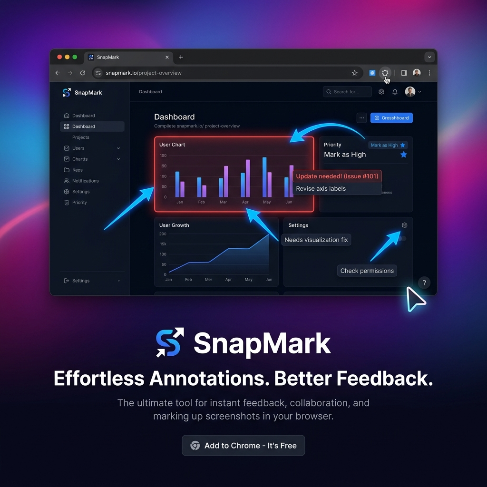

SnapMark is your go-to Chrome extension for high-performance screen capture and instant image markup. Capture any web page, add professional annotations, and share with a link—all for free.

Select specific regions or capture the entire visible area with a single click or keyboard shortcut.
Add arrows, boxes, circles, and free-hand drawings to highlight exactly what matters.
Instantly redact sensitive information or PII before sharing your screenshots.
Upload to your personal Supabase storage and get a shareable link instantly. No accounts needed.